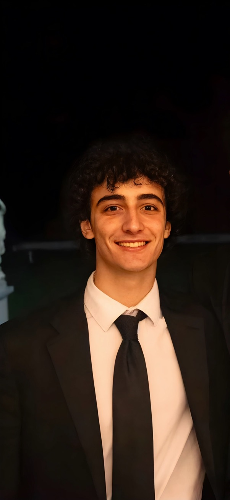
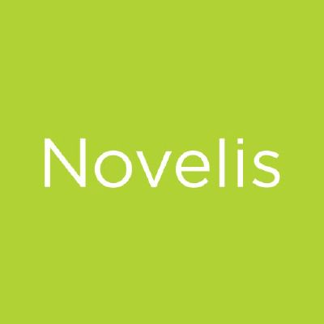

About
Hi! I'm Ryan Quinn, a third year undergraduate at MIT and previous researcher at MIT CSAIL. I'm currently interested in exploring how machines understand and interact with the physical world. My research interests include multimodal 3D reconstruction, video planning for embodied agents, and extracting latent action models from video.
Previously, I was an undergraduate researcher in both the Algorithmic Design Group and the Networks & Mobile Systems Group of MIT CSAIL. I've also interned as a software engineer at both Amazon and Novelis. Recently, I've contributed to projects involving deep-learning motion tracking and robotic simulations, and I'm hoping to work more with recurrent state-space models soon.
Outside of work, I am a semi-professional DJ and music producer. I also love playing soccer, boxing, and going to music festivals or concerts. Feel free to reach out if you'd like to chat!
Experience

|
Incoming Undergraduate Researcher MIT CSAIL — Cambridge, MA Marine Robotics Group |
Sep 2026 |
|
Incoming Software Engineer Intern Coinbase — New York, NY |
May 2026 – Aug 2026 | |
|
|
Undergraduate Researcher MIT CSAIL — Cambridge, MA Algorithmic Design Group |
Oct 2025 – Jan 2026 |
|
|
Software Development Intern Amazon — Seattle, WA Personlization Team - Generative Recommendations |
May 2025 – Aug 2025 |
|
|
Undergraduate Researcher MIT CSAIL — Cambridge, MA Networks & Mobile Systems Group |
Jan 2025 – May 2025 |
|
 |
Global Software Engineer Novelis — Oswego, NY Global Automation Team |
Jun 2024 – Feb 2025 |
Projects
VisionBeam: Vision-Driven Camera Interface for Autonomous Stage Lighting
May 2026
Autonomous stage lighting that identifies and tracks the most active performer through a combination of deep learning object detection and classical motion analysis.
PuckBot: Predictive Interception and Striking Control for IIWA Air Hockey
November 2026
Robotic simulation framework that utilizes 2D kinematic prediction and inverse kinematics to estimate air hockey puck trajectories.
News
- [ Nov 2025 ] Accepted offer to work with Coinbase for Summer 2026.